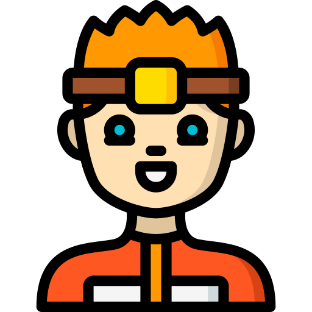

I'm Natesh.
A Web Developer.

I am a B-tech 2nd year CSE student at IIT Bhubaneswar.

I used to draw picures when I was a child in most of the time I had. This is one of my earliest hobbies and one of my favourites as well.

I love listening to music when I'm bored or even in times don't know what to do. I had created playlists of some categories and when I listen to a new song and like it, then I add to a playlist to listen it often.

I like to edit photos, videos and adding visual effects to them. I recently started learning VFX in some softwares to master it.
I am an Anime fan. I most oftenly watch Anime next to listening to music. My favourite Anime is Hunter X Hunter.

I like to know facts and learning new things. I believe that this habit increases my memory power and IQ. Every fact I listen, I try to remember them all.
Have common interests as me? Let's talk about how awesome our interests are!
CONTACT ME